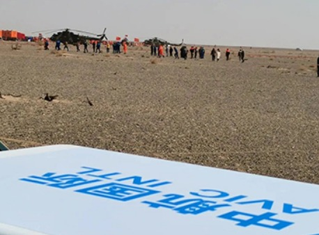
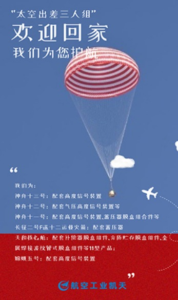
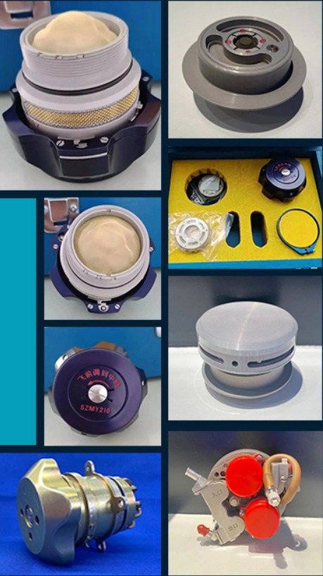
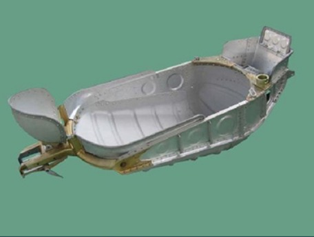

-
空天同行
共筑“中国梦”
-

作为着陆场搜救通信保障重要参与单位，中航国际飞思通信提供相控阵宽带卫星通信服务,为神舟十三号载人飞船平安返航打造了优质的通信网络环境。值得注意的是，这也是全球首次在航天员返回通信保障中应用相控阵宽带卫星通信技术。
-
为三位天空“出差”航天员提供精确计时设备的，正是飞亚达航天表。在这次神州十三号完成的返回任务中，舱内航天服手表为航天员提供了检漏计时功能。飞亚达航天表作为中国钟表制造的典范之一，精准记录了中国太空探索的每一秒
-

为全面保障“太空出差三人组”回家安全，航空工业凯天自主研制生产的高度信号装置，突破了在轨飞行半年环境适应性等技术，在预定高度精准发出返回舱主降落伞打开信号，再次助力神舟十三号航天员乘组顺利返回哈安全着陆。
-

航空工业太航研制的环控生保系统、出舱支持分系统、本体结构分系统中的8项产品始终伴随着神舟载人飞船的每一次成功。自神舟五号飞船任务开始，太航陆续配套用于舱内服的压力调节器以及用于舱外服的压力表、安全阀、主备气密层切换阀等系列产品。自天宫一号开始，为空间站配套了服装控制台、软管束等。长期为航天员水下训练提供测压组件、气动控制台、安全阀等产品，有力保障了我国航天员地面训练、载人航天发射任务和太空出舱活动的顺利完成。
-

神舟十三号飞船历经三个阶段浴火凯旋，返回舱直立状态稳稳落地。返回舱内设有可供三名航天员斜躺的座椅，供航天员起飞、上升和返回阶段乘坐。这些陪伴航天员们进入太空，又顺利返 回地球家园的航天座椅，除头靠、椅背和椅座三个部件外，其他金属件成型及座椅的铆接装配工作均由航空工业直升机所制造完成。
在此次神舟十三号载人飞行任务中，航空工业新航作为唯一的换热设备配套企业，承担了热控分系统和生命保障分系统用冷板、换热器、冷凝干燥器等共计20项，有力保障了航天员在轨生活和电子设备的正常运行。